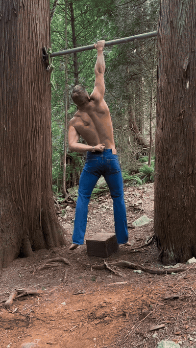

Alrighty, you want to make gains and you don't got time for all that e
MOBILITY
Not specified in reel

- Alrighty, you want to make gains and you don't got time for all that extra stuff, long elaborate workouts, burpees, box jumps, and balance balls.